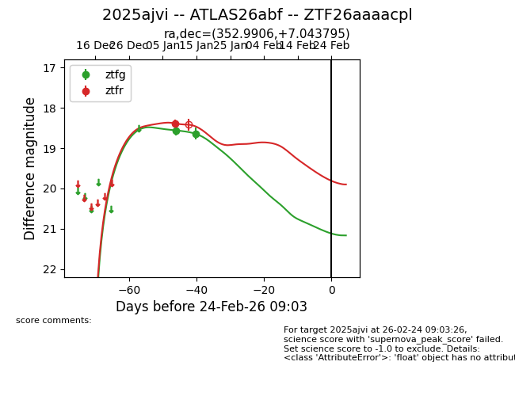
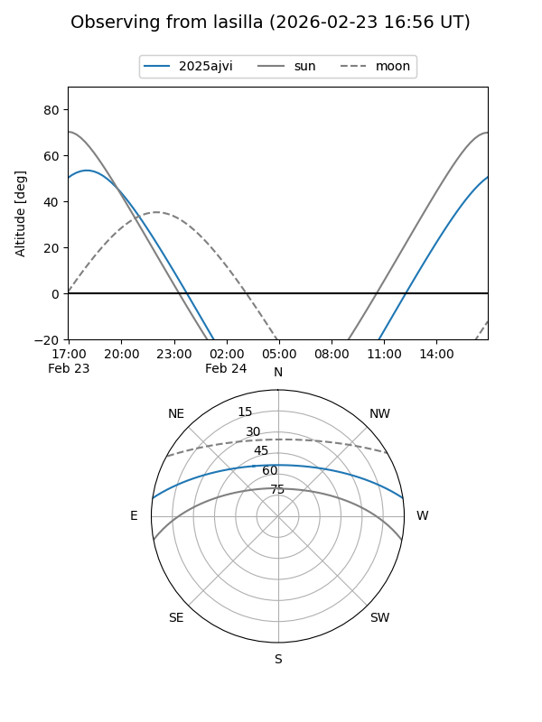
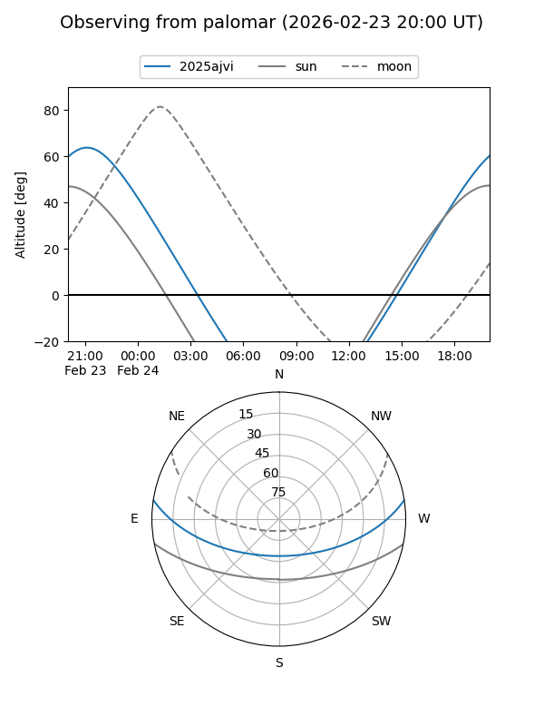
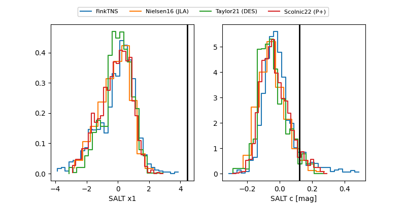

2025ajvi
Target 2025ajvi at 2026-01-09 05:30
Aliases and brokers:
FINK:
Lasair:
ALeRCE:
TNS:
YSE:
alt names
ZTF26aaaacpl (ztf,fink_ztf)
2025ajvi (tns,yse)
ATLAS26abf (atlas)
Coordinates:
equatorial (ra, dec) = 352.9906,+7.04372
equatorial (HMS+DMS) = 23:31:57.75,+07:02:37.38
galactic (l, b) = (90.6890,-50.78481)
Flags:
Photometry:
last ztfg=18.56
1 ztfg detections
Lightcurve

Visibility


Additional plots
